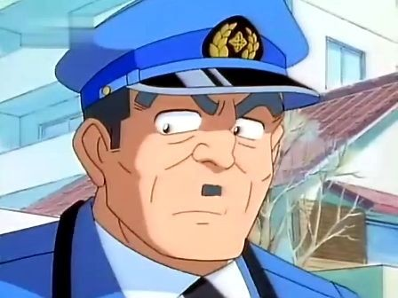

烏龍派出所人物介紹openning
動畫版出場人物
簡介
《烏龍派出所》（日語：こちら葛飾区亀有公園前派出所）是由日本漫畫家秋本治所創作的漫畫作品，原名直譯為《這裡是葛飾區龜有公園前派出所》，簡稱為「こち亀」（Kochikame）。自1976年9月21日起至2016年9月17日止在集英社《週刊少年Jump》上連載，長達40年之久，總共1960話，單行本全200卷，是金氏世界紀錄認證連載集數最多的漫畫，2021年7月被《骷髏13》以201卷超越[1]，隨後本作也於2021年10月發行單行本第201卷。已陸續改編成動畫、遊戲、電視劇、電影等衍生作品。
主要登場角色
- 兩津勘吉
- 大原所長
- 秋本麗子
- 中川圭一
- 擬寶珠纏
兩津勘吉
烏龍派出所的主角，外形酷似尼安德塔人，35歲。嗜錢如命，總是想一步登天賺大錢，甚至可以為了錢而出賣靈魂，而且只要一有錢就大多用在打小鋼珠以及賭賽馬等，輸在後者上的錢恐怕已不計其數。也有一種只要「錢在我手上就隨我用」的極惡劣心態，就算錢是別人託給他保管的或是公費旅遊金，都會全被他拿去賭博，結果都毫無例外的輸得血本無歸，之後只好拼死拼活的設法瞞混過關，興趣有賭馬、模型玩具、遙控車、柏青哥...等，手作能力強，精通各種技能，包含木工、園藝、飼養鯉魚、電器修繕、架設網站...等。
- 生日：3月3日娃娃節，因為求學時期曾經利用美國大兵公仔攻擊女兒節娃娃，因此受到女兒節娃娃的詛咒，只要在生日當天就會發生很多不幸。
- 出生：東京都台東區淺草，老家在賣日本醬菜。
- 家屬：父親是兩津銀次，母親是兩津米，弟弟兩津金次郎是東大畢業的律師，另外爺爺是兩津勘兵衛。特別篇夏春都曾經說過：兩津家的男人都像拉丁人一樣散漫馬虎，女人卻都像德國瑞士人一樣一板一眼。
- 職業：在龜有公園前派出所擔任巡察長。

位於龜有公園裡的兩津勘吉銅像
大原所長
本名大原大次郎，任職於葛飾區龜有公園前派出所，擔任所長。性格較為保守且不服輸愛面子，有著難以適應科技的弱點，興趣有盆景、將棋、釣魚、茶道、時代劇、飼養錦鯉等，而吟詩是大次郎的最愛，但吟詩猶如殺豬，不僅往往把聽到的觀眾給嚇到虛脫，甚至因此驚動全鎮及造成窗戶破裂和房屋倒塌、融化，至於棋藝跟劍道，稱得上是葛飾署的王牌，與兩津可說是亦敵亦友的上司下屬關係。
秋本麗子
葛飾署警員（巡查），任職於葛飾區龜有公園前派出所。服經允許後便和一般警察不同。出生於兵庫縣神戶市，日法混血兒，身材和文化素養極好，不論是繪畫、音樂、茶道、精緻料理（以西食為限）皆有大師級水準，其駕駛技術和槍法同與中川為一流，連處理事情的手段也是。配槍為瓦爾特PPK自動手槍。金髮巨乳美女。愛車是粉紅色的保時捷959